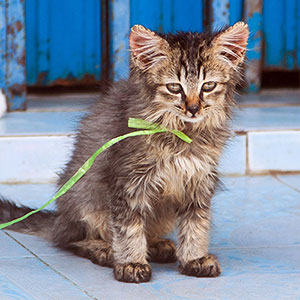
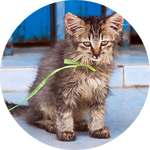
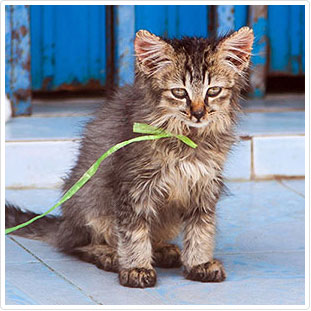
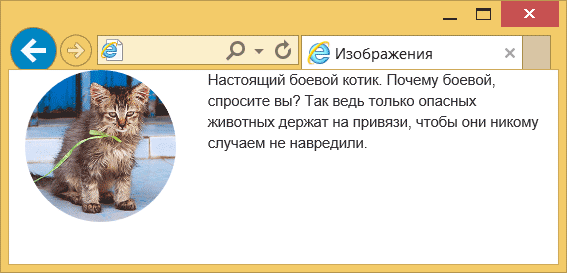

Изображения
Для оформления изображений есть несколько классов — img-rounded, img-circle и img-thumbnail.
Чтобы изменить стиль отображения картинок просто добавьте один из этих классов к элементу
Ниже показаны результаты применения каждого класса.
Оригинальное изображение:
img-rounded:
img-circle:
img-thumbnail:
Класс img-rounded скругляет уголки у картинки, img-circle делает её круглой, а img-thumbnail добавляет рамку вокруг изображения.
В примере ниже показано, как вывести фотографию и задать её стиль.
<!doctype html>
<html>
<head>
<meta charset="utf-8">
<title>Изображения</title>
<link href="css/bootstrap.min.css" rel="stylesheet">
</head>
<body>
<div class="container">
<div class="row">
<div class="col-xs-4"><img src="img/cat.jpg" alt="Котёнок" class="img-circle img-responsive"></div>
<div class="col-xs-8">Настоящий боевой котик. Почему боевой, спросите вы? Так ведь только опасных животных держат на привязи, чтобы они никому случаем не навредили.</div>
</div>
</div>
<script src="js/jquery.min.js"></script>
<script src="js/bootstrap.min.js"></script>
</body>
</html>
Любые выводимые изображения имеют исходные размеры, но для адаптивного дизайна лучше, когда ширина картинки подстраивается под ширину колонки.
Для этого к элементу
Заметьте, что классы для адаптивного размера и стиля изображения вполне сочетаются между собой.
В результате при уменьшении размера окна мы увидим и уменьшение самой картинки.
